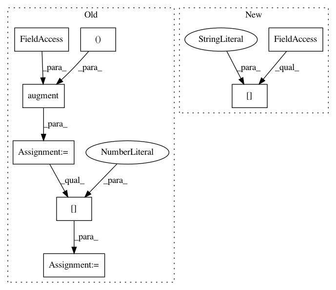

e6c3eab18602904703510d2e9cf8e5fcd6927253,tests/core/test_augmentation.py,,test_pitch_shift,#,43
Before Change
shift = 2
sample_rate = item["mix"].sample_rate
augmented_dataset = augment(dataset, pitch_shift=(shift, shift))
aug_item = augmented_dataset[0]
assert np.allclose(aug_item["mix"].audio_data[1, :],
librosa.effects.pitch_shift(np.asfortranarray(item["mix"].audio_data[1, :]), sample_rate, shift))
for name, source in item["sources"].items():
assert np.allclose(aug_item["sources"][name].audio_data[1, :],
After Change
shift = 2
sample_rate = item["mix"].sample_rate
augmented = pitch_shift(item["mix"], shift)
assert np.allclose(augmented.audio_data[1, :],
librosa.effects.pitch_shift(np.asfortranarray(item["mix"].audio_data[1, :]), sample_rate, shift))
In pattern: SUPERPATTERN
Frequency: 4
Non-data size: 8
Instances
Project Name: interactiveaudiolab/nussl
Commit Name: e6c3eab18602904703510d2e9cf8e5fcd6927253
Time: 2020-04-24
Author: abugler@gmail.com
File Name: tests/core/test_augmentation.py
Class Name:
Method Name: test_pitch_shift
Project Name: interactiveaudiolab/nussl
Commit Name: edd8219f5b5766ef9411a0cafc1c728d364c80d8
Time: 2020-05-14
Author: abugler@gmail.com
File Name: tests/core/test_augmentation.py
Class Name:
Method Name: test_stretch
Project Name: interactiveaudiolab/nussl
Commit Name: e6c3eab18602904703510d2e9cf8e5fcd6927253
Time: 2020-04-24
Author: abugler@gmail.com
File Name: tests/core/test_augmentation.py
Class Name:
Method Name: test_stretch
Project Name: interactiveaudiolab/nussl
Commit Name: edd8219f5b5766ef9411a0cafc1c728d364c80d8
Time: 2020-05-14
Author: abugler@gmail.com
File Name: tests/core/test_augmentation.py
Class Name:
Method Name: test_pitch_shift